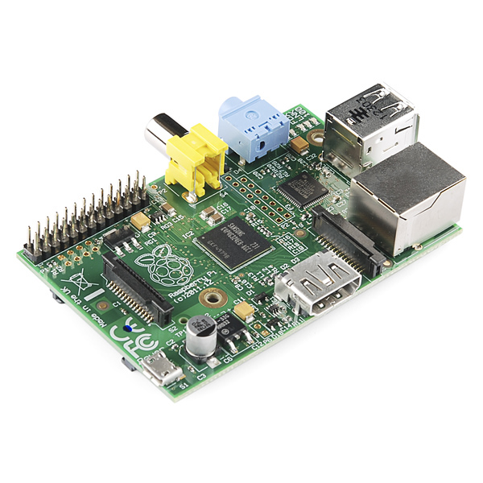
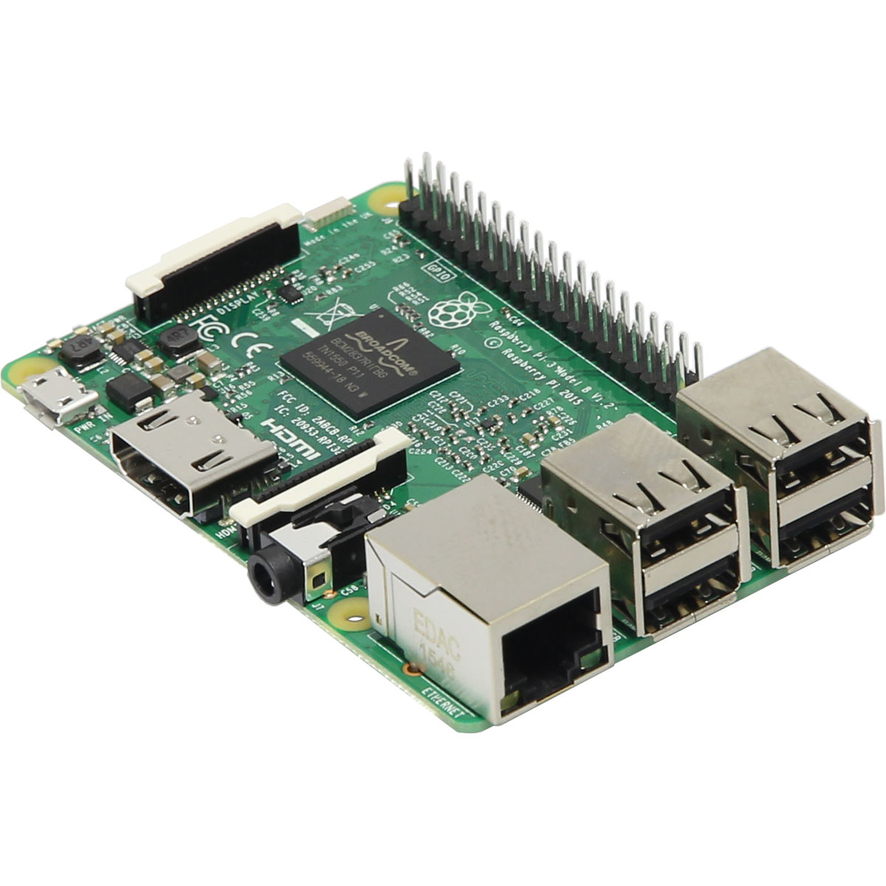

Povijest Raspberry Pi-a
Natrag
Prvi Raspberry Pi izašao je na početku 2012. godine.

Puno poboljšani Raspberry Pi 2 izašao je 2015. s puno jačim procesorom i duplo više RAM-a.
Brzo nakon toga u 2016. izašao je Raspberry Pi 3 s bržim procesorom i podrškom za brže Wi-Fi veze.

Nakon 3 godine u 2019. izašao je Raspberry Pi 4 koji je i dalje u proizvodnji danas s bržim Ethernetom,
opcijama do 8 GB rama (umjesto samo 1 GB), puno bržim procesorom, i drugim poboljšanjima.
Natrag